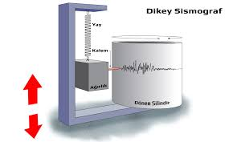
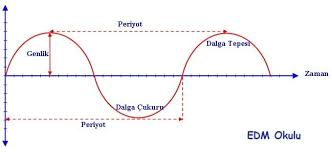
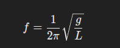
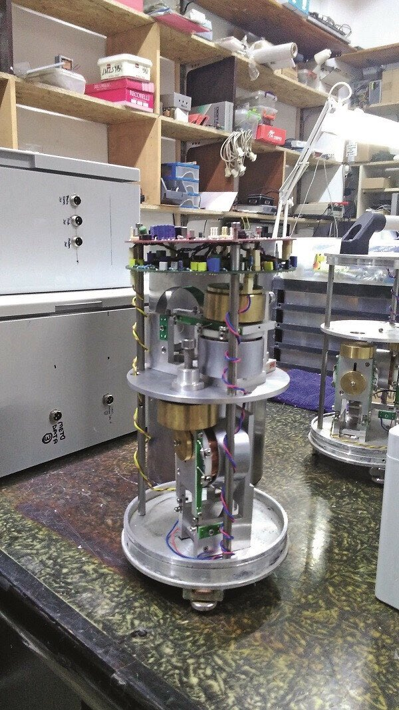
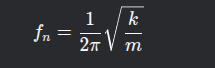
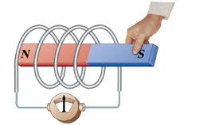

Sismometre Türleri
Bu yazımızda sismometrelerin türlerinden bahsedeceğiz. Ancak önce sismometrenin ne olduğuna kısaca değinelim.
Sismometreler, en basit tabiriyle yer hareketlerini ölçen cihazlardır. Bu tanım biraz yüzeysel olabilir, ancak bu yazının odak noktası sismometre türleri olacak. Sismometreleri daha detaylı incelediğimiz yazımıza şu linkten ulaşabilirsiniz
Neden tek bir sismometre yok da birden fazla çeşidi var? Sonuçta hepsi yer hareketini ölçmüyor mu? diye bir sismoloğa sorarsanız, size “Neden tek bir kamera tüm fotoğraf çekme işini halletmiyor?” şeklinde kızarak cevap verir. Tıpkı telefon kameralarının gündelik kullanım için iyi olduğu gibi, profesyonel fotoğrafçılar da özel lensler kullanır. Mikroskop kameraları çok küçük şeyleri görürken, uydu kameraları büyük alanları kapsar. Aynı şekilde, sismometreler de buna benzerdir
Yazıma başlamadan önce bilmeyen arkadaşlar için bazı terimlerin örnekler ile açıklamasını yapacağım çünkü bu terimleri bilmemeniz birazdan anlatacaklarımı anlamamanıza sebep olabilir.
Eskiden sismometreler oldukça basitti. Temelde bir ip, kalem ve kağıttan oluşuyordu. Bu kadar basit bir yapı, elde edilen verilerin de o kadar basit olmasına neden oluyordu. Şimdiki sismometrelerde ise çalışma mantığı hala benzer olsa da, kullanılan sistemler çok daha karmaşık hale geldi.
Ben de daha kolay anlaşılabilmesi için eski sismometrelerden başlayacağım. Bu sayede, teknoloji ne kadar gelişirse gelişsin, temel mantığın hala aynı olduğunu göstermek istiyorum.
Deprem verilerindeki frekans, periyot ve genliğin ne anlama geldiğini bir örnek üzerinden inceleyelim.
Eski tip bir sismometreyi düşünelim: Tavana bağlı bir ip ve ucunda bir kalem var. Bu kalemin ucunda ise sürekli sağa doğru hareket eden uzun bir kağıt bulunuyor. Yer hareket ettiğinde, kalem de sağa veya sola doğru hareket ederek bir veri oluşturuyor. Şimdi, yerin az hareket ettiğini varsayalım. Kalem, başlangıç noktasından önce sağa, sonra sola gidip tekrar başlangıç noktasına dönecek. İşte bu tam bir tur olarak kabul edilir ve geçen süreye periyot denir. Frekans ise saniyede kaç periyot gerçekleştiğini gösterir ve basit bir matematiksel işlemle 1/periyot olarak hesaplanabilir. Genlik ise dalganın boyutudur; yani yer az hareket ederse kalem az sağa gider, yer çok hareket ederse kalem daha fazla sağa gider. Genlik, kalemin normalde durduğu nokta ile en fazla gittiği nokta arasındaki mesafedir. Kısacası, yer hareketi küçükse kalemin hareketi de küçük olur, yer hareketi büyükse kalemin hareketi de büyük olur. bu örnekte frekansı periyodu ve genliği daha iyi anladığımızı düşünüyorum
Şimdi depremlerin frekanslarına periyotlarına ve genliklerine bakalım neden farklı tip sismometreler olduğunu bu sayede daha iyi anlayacağız
Küçük depremlerin periyodu kısa olur ve periyodu kısa olduğu için frekansı yüksektir (1/periyot = frekans). Peki, neden periyodu kısa olur? Çünkü küçük depremler sırasında yer daha az sallanır.
Bunu bir örnekle açıklayalım: Elinize iple bağlı bir taş aldığınızı düşünün. Elinizi hafifçe salladığınızda taş, başlangıç noktasından çok uzaklaşmaz, sağa ve sola hareket eder ve kısa sürede tekrar merkez noktasından geçerek bir periyodu tamamlar. Ancak elinizi daha güçlü sallarsanız, taş daha geniş hareket eder ve bir periyodu tamamlama süresi uzar.
Aynı mantıkla büyük depremlerde de yer hareketi daha geniş ve uzun süreli olur, bu da periyodun uzamasına neden olur. Sonuç olarak, büyük depremlerin frekansı küçüktür çünkü periyotları uzundur.
Küçük bir çakıl taşı suya düştüğünde küçük ve sık dalgalar oluşturur (yüksek frekans). Büyük bir taş düştüğünde ise dalgalar daha geniş olur ve daha yavaş yayılır (düşük frekans).
Şimdi doğal frekansa gelelim. Herhangi bir deprem yokken, yukarıda bahsettiğimiz sistemin bir frekansı vardır; buna doğal frekans diyoruz. Bu frekansı, ipin uzunluğu ve ipin ucuna bağladığımız ağırlık belirler. Bunun formülü şu şekildedir:
Burada, g yerçekimi ivmesi (9.81 m/s²) ve L ipin uzunluğudur.
Şimdi, bir örnekle bunu açıklayalım: Eğer ipin uzunluğu kısa olursa, ve büyük bir yer hareketi (büyük bir deprem) gerçekleşirse, ipin hareketi sınırlara ulaşabilir. Yani, ipin kısa olması, büyük yer hareketlerini ölçme kapasitesini kısıtlar, çünkü ipin hareketi çok fazla olabilir ve sistemin sınırlarına ulaşabilir. Kısa ip ile küçük hareketler daha hassas şekilde ölçülebilir, ancak büyük depremleri ölçmek zordur.
Öte yandan, ipin uzunluğu artırılırsa, büyük yer hareketlerinde ipin hareketi sınırlara ulaşmaz ve büyük depremleri rahatlıkla ölçebilirsiniz. Ancak, ip uzun olduğunda küçük hareketleri ölçmek daha zor hale gelir çünkü küçük sallantılarda ip çok az hareket eder ve bu hareketler tespit edilemeyebilir.
Sonuç olarak, kısa ip ile küçük hareketleri hassas bir şekilde ölçebilirsiniz, ancak büyük yer hareketlerini ölçmek zordur. Uzun ip ile ise büyük hareketleri rahatlıkla ölçebilirsiniz, ancak küçük hareketler daha az hassas şekilde ölçülür.
Aslında yukarıda farklı sismometre türlerinin neden mevcut olduğunu kanıtladık. Yani bir sismometre tasarlarken, kullanılan sensörün doğal frekansı, o sismometrenin kısa periyotlu mu yoksa uzun periyotlu mu olduğunu belirler. Şimdi ise, uzun periyotlu ve kısa periyotlu sismometrelerin doğal frekanslarının ne olması gerektiğine bakalım.
Küçük depremler genellikle 1–10 Hz arasındadır, yani bu depremler kısa periyotludur. Bu durumda, küçük depremleri ölçen bir sismometre tasarlayacaksak, doğal frekansımızın 0.1–1 Hz arasında olması gerekir. Çünkü ölçmek istediğimiz frekans aralığından biraz daha düşük bir doğal frekansa sahip olmak önemlidir. Eğer doğal frekansımız, ölçmek istediğimiz frekans aralığı ile aynı olursa, rezonans etkisi meydana gelir. Rezonans, bir sistemin doğal frekansı ile dış kuvvetin frekansı çakıştığında ortaya çıkar ve sistemin aşırı titreşmesine yol açar. Bu da doğru ölçüm yapmayı engeller.
Artık yavaş yavaş günümüzde kullanılan sismometrelere gelelim ve onlardaki atalet sistemi ile günümüzdeki sismometrelerin atalet sistemini inceleyelim. Her ne kadar farklı görünüyor olsalar da, mantıkları tamamen aynıdır.
İlk olarak günümüzdeki sismometrelerin tasarımına bakalım
Yukarıda da belirttiğim gibi, temel mantık her zaman aynıdır: atalet sistemi.
Atalet sistemi, bir cismin hareket durumunu koruma eğilimi üzerine kuruludur. Yukarıdaki resimde gördüğünüz sarı metaller, sismometrenin kütleleridir ve bir yay ile bağlıdır. Yer hareket ettiğinde, kütleler ataletleri gereği hareket durumlarını korumaya çalışır, böylece göreceli bir hareket elde edilir.
Eski tip sismometrelerde de aynı prensip geçerlidir. İpin ucuna bağlı bir kütle, konumunu korumaya çalışırken yer hareket eder, böylece depremin kaydedilmesi sağlanır. Yani temel fark, modern sistemlerin yay kullanması, eski sistemlerin ise ip ve kütle kombinasyonuna dayanmasıdır, ancak ikisi de atalet prensibiyle çalışır.
Buradaki kütlenin büyüklüğünde en önemli konulardan biridir. doğrudan frekansı etkiler
Yukarıda gördüğünüz formül ile doğal frekansı belirleyebilirsiniz. Bu formülde k, yayın kuvvet sabiti, m ise kütledir. Eğer kütle büyük olursa, doğal frekans düşer ve sensörünüz düşük frekanslı depremlere daha hassas hale gelir. Buna karşılık, kütle küçük olduğunda doğal frekans yükselir, bu da sensörünüzün yüksek frekanslı, yani küçük depremlere daha duyarlı olmasını sağlar.
Yay, sismometrenin en önemli bileşenlerinden biridir ve doğal frekansı doğrudan etkiler. Yayın sertliği arttıkça doğal frekans yükselir, bu da sensörün yüksek frekanslı depremlere daha duyarlı olmasını sağlar. Eğer yayın sertliği azalırsa, doğal frekans düşer ve sensör düşük frekanslı depremlere daha hassas hale gelir.
Günümüz sismometrelerinde geri beslemeli yay sistemleri kullanılıyor. Bu sistem, yay kuvvetinin elektronik olarak ayarlanmasına olanak verir. Böylece sismometrenin doğal frekansı istenilen değere getirilebilir ve çok geniş bir frekans aralığında ölçüm yapılabilir. Bu özellik, farklı büyüklükteki depremleri tek bir cihazla daha hassas bir şekilde tespit etmeyi mümkün kılar. Geniş bantlı sismometreler konusuna ilerleyen bölümlerde daha detaylı bakıcaz
Günümüzde kullanılan sismometrelerin mekanik kısmından epeyce bahsettik, şimdi ise elektronik kısmına geçelim ve eski sismometrelerle kıyaslayalım. Eskiden, sismometrelerin mekanik aksamından elde edilen veriler, genellikle kalem gibi araçlarla kağıda kaydedilirdi. Bu yöntem, birkaç büyük soruna yol açıyordu. Öncelikle, mekanik kayıt cihazları oldukça hassasiyetsizdi ve çevresel faktörlerden kolayca etkilenebiliyordu. Ayrıca, elde edilen veriler zamanla bozulabilir veya yanlış yorumlanabilirdi.
Bu yöntemler, deprem verilerinin doğruluğunu ve güvenilirliğini ciddi şekilde sınırlıyordu. Ancak günümüzde elektronik sismometreler sayesinde veriler dijital olarak kaydedilmekte ve yüksek hassasiyetle işlenmektedir. peki bu veriler nasıl elde ediliyordu.
Aslında olay oldukça basit ve tamamen Faraday’ın İndüksiyon Yasası’na dayanır. Faraday’ın İndüksiyon Yasası, manyetik alanın zamanla değişmesiyle elektrik akımının indüklendiğini söyler. Sismometrelerde hareket eden parçaya bir bobin yerleştirilir ve karşısındaki sabit kısıma ise bir mıknatıs yerleştirilir. Yer hareketi olduğunda, manyetik alan değişir ve bobinde bir elektrik akımı indüklenir. Bu sayede, yer hareketi ile doğru orantılı bir sinyal elde edilmiş olur.
Bu sensörler, mikro seviyedeki hareketleri bile ölçmenize olanak tanır. İndüklenen gerilimi, ADC (Analog-Digital Converter) ile dijitale çevirerek bir mikroişlemci ile okuyabilirsiniz. Kullanacağınız ADC’nin yüksek bit çözünürlüğüne sahip olması büyük önem taşır. Ancak bundan daha kritik bir nokta, elde edilen sinyalin doğru şekilde filtrelenmesidir.
Bobinden alınan sinyaller oldukça zayıftır, bu yüzden öncelikle yükseltilmeleri gerekir. Ancak sinyal yükseltildiğinde, çevresel gürültüler ve istenmeyen yüksek frekanslı bileşenler de beraberinde büyütülür. İşte bu noktada filtreleme devreye girer. Filtreleme, istenmeyen gürültüleri ve sistemin algılamak istemediği yüksek frekanslı sinyalleri elimine ederek, daha temiz ve güvenilir veriler elde edilmesini sağlar.
Örneğin, düşük geçiren bir filtre kullanarak sistemin tepki vermesini istemediğimiz yüksek frekanslı titreşimleri engelleyebiliriz. Benzer şekilde, yüksek geçiren bir filtre ile çok düşük frekanslı dalgalanmaları (örneğin termal genleşmeler veya uzun süreli eğimler) bastırabiliriz. Band geçiren filtreler ise belirli bir frekans aralığını hedefleyerek, yalnızca ilgi alanımıza giren sismik sinyalleri almayı sağlar.
Filtreleme konusunu başka bir yazımızda daha detaylı ele almayı planlıyoruz. Bu yazımızda, sismometrelerin genel yapısından, farklı sismometre türlerinin neden var olduğundan ve çalışma prensiplerinden bahsettik. Umarım faydalı olmuştur.